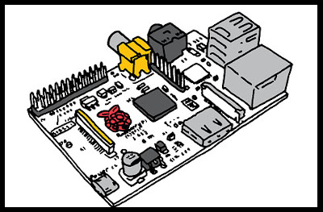
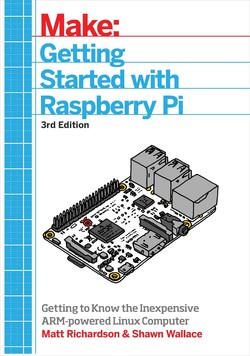
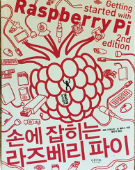
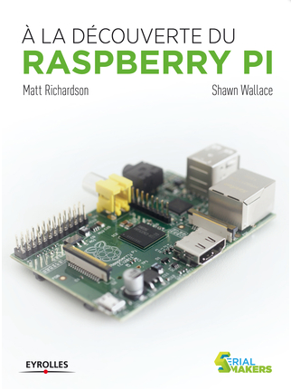
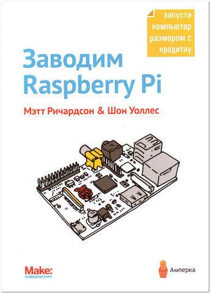
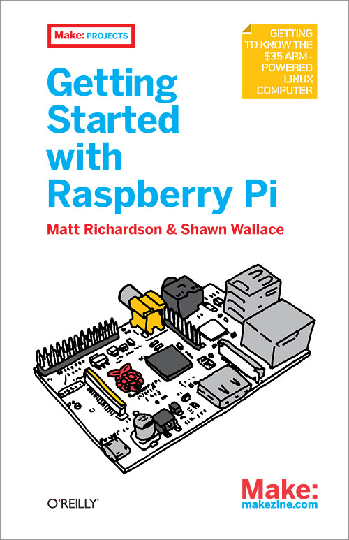
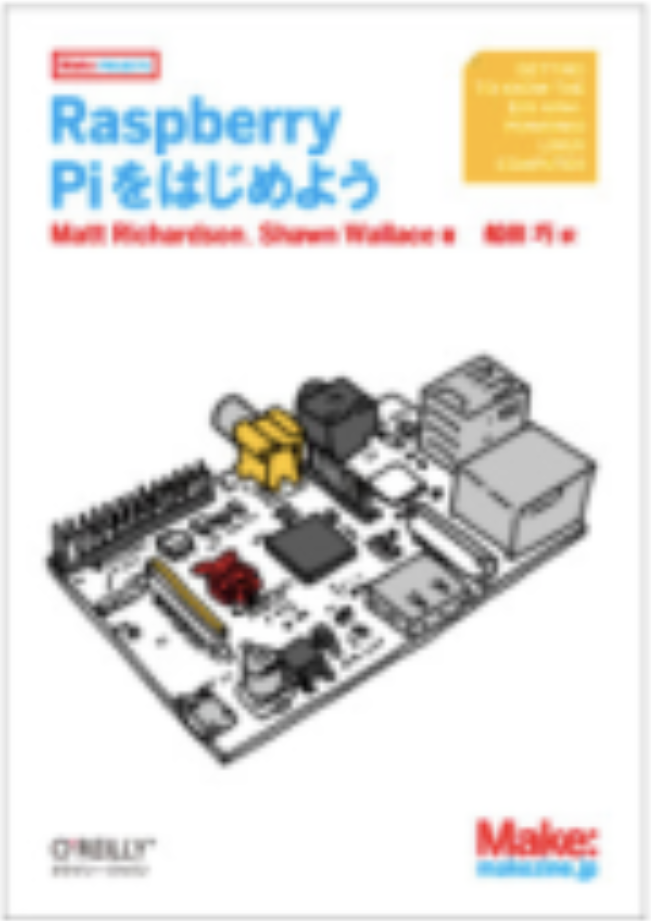

Marc DeVinck
2012
Getting Started with Raspberry Pi
In the last Quarter of 2012 I wrote
Getting Started With Raspberry Pi
with Matt Richardson for O'Reilly Media (later published by MAKE). The 3rd edition came out in 2016 and it was translated a few times in 2013.
     